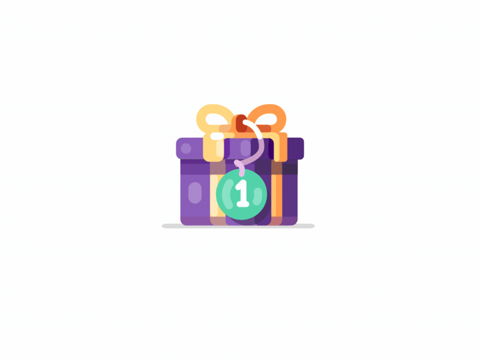
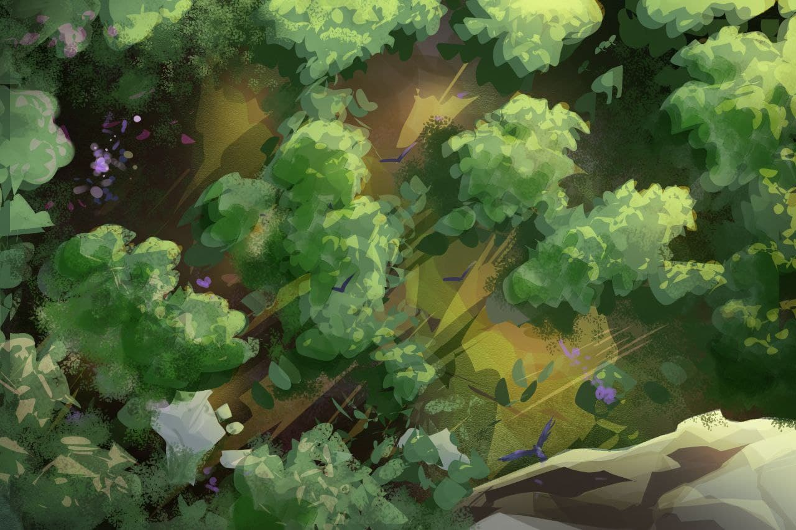

the game overview
The game will follow the storyline of Hīrō and Joō in rescuing their son Kinu.
Based on the story of KINU
The story of $KINU takes place in ancient world Japan and is a concept based around a popular anime show
Choose a character to play
Players will be able to choose to either be Hīrō or Joō on the quest of fighting off wolves in search of their son

Earn weekly prizes
Weekly prizes will be given to the top three players, based on their scores and position on the
leaderboard.
How players Win
The KINU Token will be used in the P2E game to increase its demand.

Weekly prizes will be
given to the top three players, based on their scores and position in the leaderboard. To
ensure longevity of our token, the prizes will not be given in our native token, as native token
based prizes tend to result in dumping behaviour. Connecting to the dApp is required in
order to play the game and to receive any prizes
The Development Process
We aim to complete the development of the game during Phase 2 of our roadmap. In the
interest of transparency, our game developer will do daily live streams, creating the game
before your very eyes, giving you an unforgettable and unique experience. Please note,
however, that as we wish to give you a superb gaming experience, we will not be showing
you full clips of the game itself before launching it. This will also deter any possible copying
of said game.
Our token will be one of a kind, bringing realistic #metaverse gaming to the BSC chain. As
there are countless P2E games out there, particularly in BSC, we decided to aim for a
grander long-term goal - that of being a well-known household name, played by as many
people as possible. This is done with sustainability and scalability in mind
To achieve this lofty goal, we will be releasing our very own Anime video series and an NFT
comic book Manga series. The NFTs will be an integral part of the P2E game, although
playing the game without them is entirely possible.